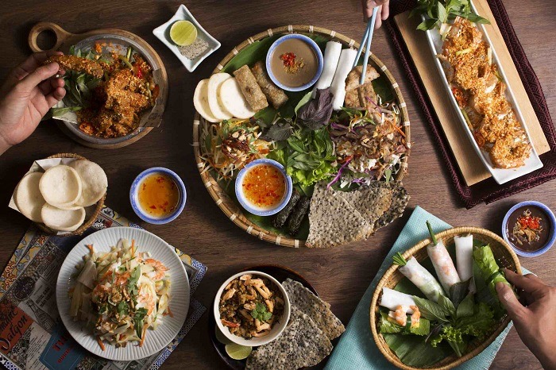

Việt Nam, một quốc gia tuy nhỏ bé nhưng lại có một lịch sử văn hóa vô cùng phong phú và đa dạng. Với cảnh đẹp tự nhiên hùng vĩ, những nét văn hóa truyền thống sâu sắc và ẩm thực phong phú, Việt Nam đã thu hút hàng triệu du khách từ khắp nơi trên thế giới mỗi năm. Mỗi một vùng miền trên đất nước Việt Nam lại có những đặc trưng về ẩm thực khác nhau.Miền Bắc thì đậm đà, miền Nam thì chua ngọt, miền Trung thì cay nồng.
Đất nước này còn được biết đến với những thành phố sầm uất như thủ đô Hà Nội, thành phố Hồ Chí Minh hiện đại, cùng với những vùng quê yên bình như Sapa hay Hội An. Bạn có thể khám phá những di sản thế giới như Vịnh Hạ Long, Khu di tích cố đô Huế, hoặc thư giãn trên những bãi biển tuyệt đẹp như ở Nha Trang hay Phú Quốc. Hay đến với Đà Nẵng,thành phố được mệnh danh là đáng sống nhất Việt Nam.
So với nhiều quốc gia khác, Việt Nam có chi phí du lịch khá phải chăng, từ khách sạn đến ăn uống và hoạt động giải trí. Người Việt rất nhiệt tình và hiếu khách với du khách, điều này tạo ra một môi trường thân thiện và chào đón. Ngoài ra, bạn cũng có thể tha gia vào nhiều hoạt động phiêu lưu từ trekking ở núi rừng đến thăm thắng cảnh tự nhiên, lặn biển và tham gia các hoạt động mạo hiểm khác, Việt Nam cung cấp nhiều cơ hội cho những người yêu thích phiêu lưu.
👉🏻 Hãy đến thăm quan và trải nghiệm Việt Nam để cùng với chúng tôi khám phá ra nhiều điều mới mẻ, độc đáo.HÃY BẮT ĐẦU HÀNH TRÌNH CỦA MÌNH NGAY BÂY GIỜ!